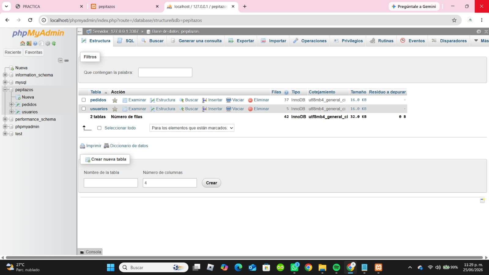

Conexión a Base de Datos con PHP
En esta práctica se realiza la conexión entre PHP y una base de datos MySQL utilizando la función mysqli_connect.

<?php
$conexion = mysqli_connect(
"127.0.0.1",
"root",
"pepitazos",
"3307"
);
if(!$conexion){
die("Error de conexión: " . mysqli_connect_error());
}
?>
La conexión a una base de datos en PHP permite establecer comunicación entre el servidor web y MySQL para el manejo de información de manera dinámica.